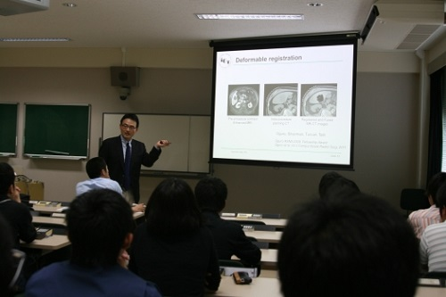

回饋社會的開源技術

◎本文原載 Linux Pilot，原文章連結按此。
從事醫療行業的朋友，可能都曾經用過一個叫 3D Slicer 的醫療圖像處理軟體。3D Slicer 可以用 3D 的形式，將器官以不同的角度「切割」以查看橫切面，並可結合磁力共震 (MRI) 的數據，以便對一些像腦神經外科等危險程度較高的手術，進行更多的事前計畫與模擬。

醫療軟體由於只針對特定的少數用戶族群，因此售價必須設定得比較高，才有可能將開發成本收回。但對於一些不大富裕的國家來說，高售價便成為了他們採用新技術的障礙，這時開源技術便大派用場了。3D Slicer 正是一個在 Linux 上的開源醫療軟體，任何人都可以自由下載程式碼，然後自由編譯使用，完全免費。開發 3D Slicer 的核心人物，便是在哈佛大學醫學院任教的波多伸彥教授。
波多伸彥早在攻讀博士學位時，就已經進行 3D Slicer 的開發，有人問他為什麼要將自己努力的成果，公開讓所有人免費使用。他的答案十分簡單：「我們從國家的稅收得到研究經費，將研究成果回饋社會很正常啊。」在學術界有不少人都有這樣的想法，或多或少都是因為受到當年人類基因組計劃 (Human Genome Project, HGP) 事件的影響。
1990 年代美國政府投入了 30 億美元在 HGP 上，目的是找出成人類染色體中所包含的 30 億個鹼基對組成的核苷酸序列，其後研究成果在 GenBank 網站上公開。沒隔多久一家名為 Celera 的企業也宣稱用了 3 億美元完成類似研究，但後來卻被揭發其「研究成果」其實是挪用了 GenBank 的資料加工而成的。Celera 被學術界猛烈批評後態度軟化，同意讓公眾在非商業目的下取得研究結果的數據，條件是每個人可下載的數據均有上限。其後學術界都傾向把開發成果盡快開源化，3D Slicer 便是在這個時代背景下的產物。
有人會問在 GenBank 網站上公開的數據有什麼用？假設研究人員在調查一種癌症過程中，鎖定了某個遺傳因子，GenBank 可讓他得知其他研究人員過去曾經對此遺傳因子進行過怎麼樣的調查、它的機能是什麼、和其他人類遺傳因子在進化上有何關係、有沒有突然變異的可能性、與其他遺傳因子的相互作用、在什麼組織上被發現、有什麼疾病與此有關等等。開源不單是 IT 業界破格的新文化，也可以為病人帶來新希望。